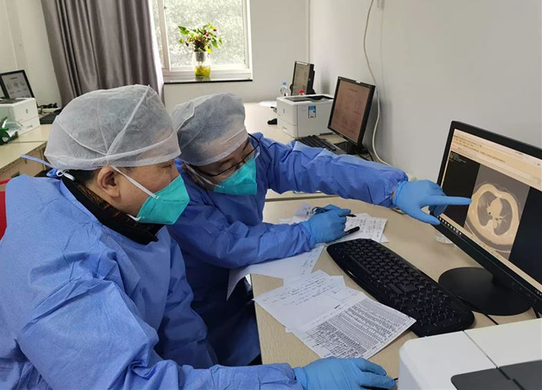
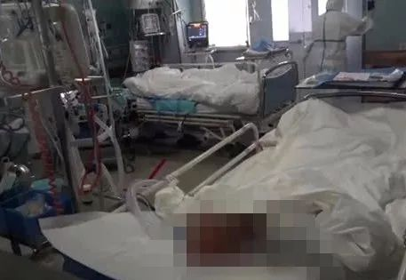
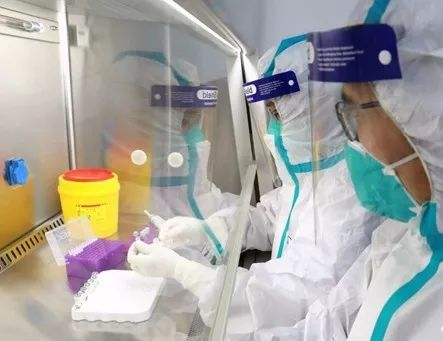
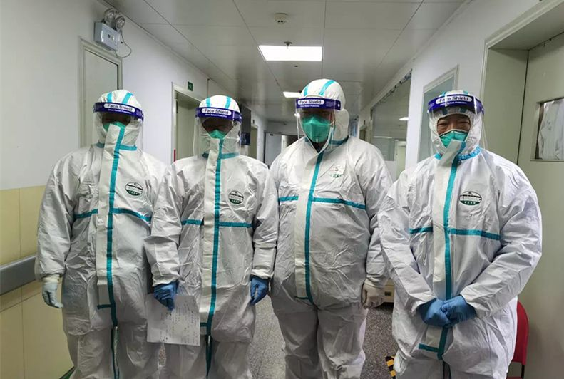

武汉不设防
原文链接 备份链接 17 年前的那场公共卫生危机，未能及时公开疫情成为事后被诟病最多的问题之一，也成为中国疾病防控系统以及政府信息公开等许多方面的重要转折点。 而多年后，越来越多的互联网官方渠道成为了重大事件的定海神针，「官宣」被普遍接 …
记者/ 佟晓宇
编辑/宋建华

会诊中的童朝晖（右一）
新型肺炎与SARS有何区别？治疗难度如何？幼儿和青年不易感染？易感人群又存在哪些特征？抗艾滋药对新型肺炎临床治疗真的有效吗？
针对新型冠状病毒治疗的一系列问题，1月27日，北青深一度记者采访了正在武汉抗疫一线参加对重症患者救治的北京朝阳医院副院长、呼吸危重症专家童朝晖。
1月18日，童朝晖同北京协和医院内科重症监护室主任杜斌教授、东南大学附属中大医院邱海波教授作为援助专家一同抵达武汉，重点指导和负责武汉危重症患者的临床救治。
作为呼吸危重症专家，在2003年非典时，童朝晖曾带领43名医务人员建立北京朝阳区妇幼保健院SARS病房，期间收治近百例患者，无一死亡，被称为“中国顶级SARS病房”。
持续到午夜的研讨会议、查房，指导重症和危重症患者的治疗，填满了童朝晖现在的每一天。

金银潭医院中的重症监护病房

重症患者年龄偏大，多有基础疾病
深一度：您到武汉后去了哪几家医院？每天主要的工作是什么？
童朝晖：主要是救治重症和危重症患者。现在武汉对于重症患者集中收治，主要在金银潭医院、武汉军科医院、武汉大学中南医院。我的工作基本在临床上，给这些医院和医生指导，有不合理的地方就指出来。
深一度：临床救治中发现存在哪些问题吗？
童朝晖：救治工作没有问题，但是大家对这个疾病的认识、了解不一样，比如说急性呼吸衰竭治疗的把握也不一样。
深一度：危重症患者都采取哪些治疗？
童朝晖：对于重症和危重症患者有明确定义，按照标准分为重症和危重症，对于重症和危重症的治疗政策也不同，救治按照不同的方式进行，比方说无创呼吸机、有创呼吸机、体外膜肺等。
深一度：大家议论的幼儿或青年人不易感，准确吗？
童朝晖：是否幼儿和青年不易感，应该说现在没有充足的证据。当然也不能说小孩易感，这里不能这么讲，深圳就有儿童确诊病例，现在也有年轻人确诊的例子。
深一度：所谓的易感人群，存在什么样的特征？
童朝晖：总体感觉就是，像2003年的SARS的发展，二三十岁的青年人感染的病例会多一些，现在可能五六十岁的人会受到更多的影响，而且这些人往往有一些基础疾病，比如糖尿病、高血压，而且病情往往会重一些。
深一度：重症患者多存在您上述提到的这些特征是吗？
童朝晖：对，年龄偏大。
深一度：这些重症患者现在治疗会面临一些困难吗？
童朝晖：重症患者其实主要还是靠呼吸支持，还有脏器保护，相应这些东西现在我们做的都比较专业。应该说跟我们平时治疗那些病毒、肺炎、急性呼吸紧迫综合征，包括当年的SARS，治疗策略都是一样的。
深一度：重症患者所需的包括呼吸辅助器材现在能保证吗？
童朝晖：现在数量是能保证的。
深一度：上呼吸机和插管这些工作会增加医生的感染风险吗？
童朝晖：相比于其他轻症患者来说，对危重症和重症患者插管的过程，可能需要做好完备的防护，插好以后它是个密闭的系统，应该说感染的问题不大。
深一度：武汉周边地区的重症患者收治情况怎样？有相关联防或上报措施吗？
童朝晖：每天都有上报，周边地区也会有重症和危重症患者，但重症病人最好还是就地入院治疗，毕竟症状重，对患者而言不太好转移。

截止1月26日，武汉大学中南医院检验科已完成近1500例样本检测
和华大基因签约，第三方介入检测
深一度：目前您了解到的医院床位够用吗？
童朝晖：对于重症的来说，这些问题一直在调整，包括不同医院分别收治轻症、重症患者，然后现在又再组织建一个新的医院，这些都是积极的改善现状的措施。
深一度：对于一线的医生，包括 ICU病房口罩、防护服这些物资使用情况如何？是否够用？
童朝晖：重症的定点医院目前还没有问题，但是可能前一段存在这个问题，现在在继续想办法解决。
深一度：是否存在检测难、确诊难的情况？是什么原因引起的？
童朝晖：主要是供应不上，一天能做的检测有限，人力上也有问题。现在也在慢慢解决。
深一度：现在试剂盒已经投入使用了，您了解到的它应用的情况怎样？
童朝晖：现在尽可能能检测的全部都检测，包括和华大基因签约了，让第三方介入。本身做检测的人手少，需要做采样啊，这些都得有人去做。
深一度：所以医护人员一直是紧缺的情况？
童朝晖：现在全国都在派医疗队，应该说会好的。
深一度：对于正在筹建的火神山医院等，这些医院的建立对缓解疫情有哪些作用？尤其是对您关注的危重症患者。
童朝晖：肯定会增加很多床位，专门收治这些冠状病毒肺炎患者，所以说能够缓解其他医院存在的床位不够等情况。当然危重症患者可能还是要由定点医院治疗。

进入病房前的一线救治医疗专家（左二为童朝晖）
新型肺炎比SARS治疗难度更大
深一度：您此前参与过SARS的防控和救治，二者有什么共性和区别？
童朝晖：SARS当年青壮年患者多一些，患新型肺炎的多数有基础疾病，并且五六十岁的患者多一些。所以这两者比，救治起来就显得新型肺炎的难度要大一些，插管比例可能会高一些。
另外，当年SARS是发热，起病比较急，在高热阶段会有传染性。而新型肺炎存在潜伏期，在潜伏期就有传染性，甚至有的也不怎么发烧，看起来没有明显的症状。
深一度：所以新型肺炎的治疗难度更大？
童朝晖：对，新型肺炎80%是和SARS相近，20%是不同的。不同的地方就是它变异的地方，跟SARS相比它的临床治疗难度是更大了。
深一度：SARS的防控和临床治疗有什么经验是新型肺炎可以借鉴的？
童朝晖：SRAS包括后面的禽流感、甲流，这些都是病毒肺炎，相应的救治策略，应该说都差不多，包括对现在的新型肺炎，应该说都大同小异。主要就是呼吸支持，保证病人呼吸支持，不缺氧，包括脏器保护和其他相应的一些治疗。事实上危重症呼吸衰竭的治疗，在日常我们就是这么做的。
深一度：之前有专家预测感染数量可能会出现拐点，通过您的临床观测，您对疫情的发展有什么预测吗？
童朝晖：我不敢预测，因为我是临床医生，主要是诊断救治患者，预测的都是流行病学和CDC（中国疾病预防控制中心）专家，所以应该请他们来回答。
深一度：您通过对临床情况的观测，到目前看来重症患者没有减少的趋势？
童朝晖：还没有减少的趋势。
艾滋药阻断药有效性待论证
深一度：此前有感染病专家称艾滋药阻断药可能对新型肺炎的治疗有效，您怎么看？
童朝晖：现在因为都是个体个案，有的是个人经验，没有做一些对照研究，所以很难说是否有效。因为我们在临床上治疗病人是要有依据的，要有证据。
其次，这个药本身它的适应症就没有治疗冠状病毒的适应症，所以我觉得可能还得看一下，不好下结论说它就是有效。
深一度：对普通人您有一些什么防控建议吗？
童朝晖：自己要注意，尽量减少去不通风、密闭的环境，包括现在提倡大家戴口罩，跟对呼吸道传染病的要求是一样的。
深一度：对于轻症患者您有哪些治疗和防护建议？
童朝晖：轻症患者如果没有明显的症状，也不低氧，也没有呼吸道症状，我觉得可以在家里居家隔离。出现明显症状，病情加重，还是要到医院的。
*【反侵权公告】本文系北京青年报在腾讯新闻独家首发，未经授权，不得转载。*

抗击新型冠状病毒的基层医院 | 深度报道

我与“新型冠状病毒”搏斗的22天 | 深度报道

照顾发烧丈夫，妻子穿上一次性塑料雨衣 *| 深度报道*


原文链接 备份链接 17 年前的那场公共卫生危机，未能及时公开疫情成为事后被诟病最多的问题之一，也成为中国疾病防控系统以及政府信息公开等许多方面的重要转折点。 而多年后，越来越多的互联网官方渠道成为了重大事件的定海神针，「官宣」被普遍接 …
原文链接 备份链接 2019年3月，武汉协和医院急诊科副主任孙鹏调到该医院的西院，负责急诊科的工作。12月底华南海鲜市场冠状病毒事发，西院开设发热门诊，这两个门诊的工作都落到他头上。今年1月26日上午，孙鹏告诉记者，医院刚接到通知，他们 …
原文链接 备份链接 特约撰稿 李梦琪 本报记者 郭阳琛 石英婧 上海报道 “我比很多同事都幸运，除夕是在家过的。”已经在抗击疫情一线连续奋战了二十多天，除夕夜能和家人在一起度过让武汉市肺科医院隔离病区护士吴青（化名）格外欣慰。 由于武汉疫 …
原文链接 备份链接 【财新网】（记者 黄蕙昭 刘登辉）大年初三一早，迎接人们醒床的第一条消息，是国务院办公厅延长春节假期至2月2日的通知。疫情肆虐，延迟返工返校政策早有预兆。考虑到春节结束大规模人口迁移可能导致又一轮疫情集中爆发，适当延 …
原文链接 备份链接 作者 | 周纯 出品 | 棱镜·腾讯小满工作室 新型冠状病毒肺炎疫情下，人们担心自己会被周围未知的病毒携带者感染，更担心万一感染之后，能否治愈？是否会像当年“非典“一样留下后遗症？ 《棱镜》1月25日对话了一名新型冠状 …